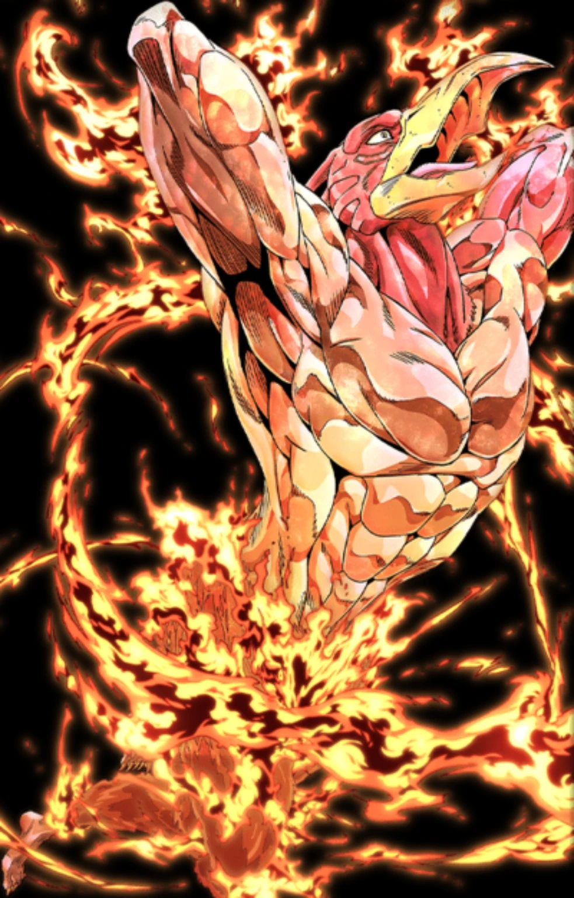

MAGICIAN'S RED
A ranged area-control Stand. Cross Fire generates Fire Gauge on real hits and the same slot can be held for Fire Trap, while Flame Spray and Cross Fire Bomb spend Fire to control groups.
FIRE GAUGE
Cross Fire costs no Fire. A real damaging Cross Fire hit gives +4 Fire. Flame Spray costs 20 and Cross Fire Bomb costs 32 base / up to 55 at full charge.
Skill 1 — CROSS FIRE / FIRE TRAP
Cross Fire is the reliable ranged shot and primary active Fire generator. Holding the same skill slot uses Fire Trap for prepared area control instead of the direct shot.
Skill 2 — FLAME SPRAY
Rapid flame rush/spray that pressures a lane and can ignite. Full charge increases hit count.
Skill 3 — FIRE CONTROL / DETECTOR
Fire Control handles fire-control/extinguish utility, while holding the same slot uses Detector. The HUD therefore labels the slot FIRE CONTROL/DETECTOR.
Skill 4 — CROSS FIRE BOMB
Area fire attack. Full charge spends more Fire for a much larger radius and stronger effect.
HOW TO THINK ABOUT THIS STAND
The / mark means one skill slot has more than one move, such as CROSS FIRE/FIRE TRAP. It does not mean pressing two different skill keys together.
Use Cross Fire to build Gauge, then choose Flame Spray, Fire Trap or Cross Fire Bomb based on space and target count.